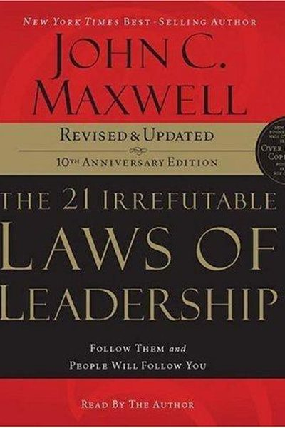

Library › Power & Strategy
The 21 Irrefutable Laws of Leadership — Summary & Key Lessons

Follow them and people will follow you — the classic leadership laws that have trained millions.
📖 OPEN THE FULL INTERACTIVE BREAKDOWN →🌐 Read it in Hindi, Hinglish, Gujarati, Tamil & 22 more languages — free, with audio.
💡 The Big Idea
John Maxwell's foundational claim: leadership is influence, and influence is learnable. The 21 laws — from the Law of the Lid (leadership ability determines your effectiveness) to the Law of the Picture (people do what they see), the Law of Buy-In (people buy into the leader first, then the vision) and the Law of Legacy — form a complete system for growing your ability to lead. Each law is a lever: pull it and your influence grows; ignore it and it quietly limits you.
🧠 The 8 Key Lessons
Lesson 1: The Law of the Lid: Leadership Sets Your Ceiling
The Law of the Lid
Your leadership ability — your 'lid' — determines how far you and your organization can go. A team with a lid of 5 can never outperform a lid of 9 for long, regardless of talent. The fastest way to raise your ceiling is to raise your leadership: the skills are learnable, and the lid moves with them.
📖 Example: Two identical teams with different leaders produce different results — not because the people changed, but because the leader's ceiling became the team's ceiling. Read the full example →
⚡ Do this: Rate your leadership lid 1-10. Pick the one leadership skill that would raise it most, and start studying it this week.
Lesson 2: The Law of Influence: Title ≠ Leadership
The Law of Influence
A title gives you authority, not influence. Real leadership is measured by who follows you voluntarily — and influence comes from trust, competence and care, not from your nameplate. The test: if your title disappeared tomorrow, how many people would still follow you?
📖 Example: Maxwell describes managers with grand titles that no one actually follows, and informal leaders — the person everyone goes to for advice — who lead without any title at all. Read the full example →
⚡ Do this: Ask yourself the title test honestly. Then invest in one relationship where your influence is low but matters.
Lesson 3: The Law of Process: Leadership Is Daily
The Law of Process
Leadership develops daily, not in a day. It's the accumulation of small choices — reading, listening, serving, deciding — compounded over years. There is no shortcut to the process; the 'overnight success' leader has usually been growing quietly for a decade.
📖 Example: Maxwell himself read a book a week and studied leaders for decades before his influence grew; his growth was visible only in retrospect, as a process, not an event. Read the full example →
⚡ Do this: Start a daily leadership habit: 20 minutes of reading or reflection on one leadership topic, every day.
Lesson 4: The Law of the Picture: People Do What They See
The Law of the Picture
People follow examples, not instructions. Your actions are the picture your team copies — your punctuality, your calm under pressure, your honesty. You can't lead where you won't go; the leader is the model. If you want the team to change, change the picture first.
📖 Example: A CEO who expects 8 AM starts but strolls in at 9:30 is training everyone to be late. The leader's behavior is the strongest message the team receives. Read the full example →
⚡ Do this: Identify one behavior you want from your team — and demonstrate it visibly this week. Be the picture.
Lesson 5: The Law of Buy-In: People Buy the Leader First
The Law of Buy-In
People don't buy into a vision until they buy into the leader. They ask: can I trust you? Do you believe in us? Will you take us somewhere good? Vision matters — but only after trust. Spend your effort on being worth following, and the vision gets carried.
📖 Example: Every major movement Maxwell studies — from business turnarounds to political campaigns — succeeded because followers believed in the person before the plan. Read the full example →
⚡ Do this: Before your next big ask, invest in the relationship: listen, serve, and show you're trustworthy. Then share the vision.
Lesson 6: The Law of Addition: Leaders Add Value
The Law of Addition
Leadership is serving people by adding value to their lives — not using them to add value to yours. When you genuinely help your people grow, succeed and feel valued, they give you their best. The self-serving leader gets compliance; the serving leader gets commitment.
📖 Example: Maxwell's personal law: add value to people every day — a call of encouragement, a skill taught, a door opened. Over time this builds a team that would follow him anywhere. Read the full example →
⚡ Do this: Do one unselfish act of addition today: teach something, praise someone specific, or open one door for someone.
Lesson 7: The Law of Timing: When to Lead Is as Important as What
The Law of Timing
Leadership is about the right action at the right moment. Too early, you're ahead of the crowd; too late, the moment is gone. Great leaders sense timing — they know when to push, when to wait, when to strike. The right decision at the wrong time is the wrong decision.
📖 Example: Many good products failed because they launched too early or too late; many good reforms failed because the leader ignored the moment. Timing turned identical actions into triumph or disaster. Read the full example →
⚡ Do this: Before your next major move, ask: is this the right moment? What changes if we wait a month? Decide deliberately.
Lesson 8: The Law of Legacy: Leave Something That Outlasts You
The Law of Legacy
True leadership builds beyond itself. The leader's final test is whether the organization thrives after they're gone. That requires developing other leaders, embedding systems and values, and making yourself replaceable — not indispensable. Legacy is leadership that continues without you.
📖 Example: Maxwell contrasts founders whose companies collapsed when they left with those who raised successors — the legacy leaders multiplied their influence beyond their lifetime. Read the full example →
⚡ Do this: Identify one person you can develop this quarter. Begin transferring a skill, a responsibility or a value to them.
✅ 5-Step Action Plan
- Raise your lid: study one leadership skill this week.
- Pass the title test: earn influence where your title doesn't reach.
- Start a daily 20-minute leadership growth habit.
- Be the picture: demonstrate the behavior you want from others.
- Develop one successor — build your legacy.
💬 Best Quotes from The 21 Irrefutable Laws of Leadership
- “Leadership is influence — nothing more, nothing less.”
- “The Law of the Lid: leadership ability determines a person's level of effectiveness.”
- “People buy into the leader first, then the vision.”
Interactive version: mark lessons as read, listen in your language, share quote cards.